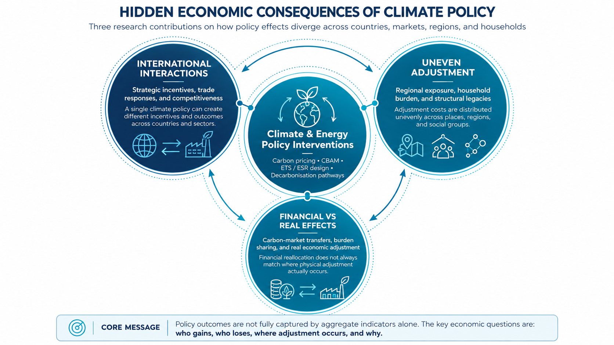

Selected Research Contributions
My research examines economic consequences of climate and energy policies that are not always evident from their intended objectives or aggregate outcomes. These three contributions bring together insights from published articles and ongoing work, focusing on the economic mechanisms and differences that matter.

International Incentives and Divergent Economic Consequences
A climate policy can create different incentives and outcomes for trading partners, industries, and national welfare—even when its environmental objective is shared.
My earlier research on international mitigation cooperation examined why countries face unequal incentives to act. Under the scenarios considered, the United States and China can obtain net gains from unilateral mitigation over a long horizon, while smaller economies retain incentives to free-ride. Short-run costs and differences in the distribution of benefits help explain why economically beneficial cooperation may remain difficult to achieve.
Subsequent research on the EU Carbon Border Adjustment Mechanism (CBAM) shows how the consequences of a common regulation diverge across economies and economic measures. Brazil's relatively low-carbon energy-intensive industries may gain trade competitiveness even while the country bears aggregate welfare costs. For least developed countries, exemptions can improve welfare while increasing carbon leakage; targeted support for cleaner energy and efficiency can yield different trade-offs. Research on China's strategic responses similarly identifies the economic incentives behind retaliation and resource shuffling.
Selected supporting research
- Perdana & Tyers (2020) · Strategic incentives for global mitigation · The Energy Journal
- Perdana & Vielle (2022) · CBAM and least developed countries · Energy Policy
- Perdana et al. (2023) · CBAM and Brazilian industries · Climate Policy
- Perdana et al. (2026) · China's CBAM responses · Review of World Economics
Uneven Economic Adjustment across Regions and Households
Similar climate-policy pressures do not lead to similar economic burdens: initial household circumstances and inherited regional production structures matter.
My research on the EU's second emissions trading system (ETS-2) reveals distributional patterns that national averages can conceal. Lower-income and rural households are disproportionately exposed, while regional differences in housing, transport, fossil-fuel dependence, and access to low-carbon alternatives help explain unequal burdens. Related research finds that transition exposure extends beyond coal-producing regions to refining and port economies, industrial centres, and agricultural regions.
Ongoing research extends the question from where exposure is concentrated to why vulnerability persists and how regional economies adjust over time. The emerging findings indicate that inherited carbon-intensive structures are a stronger determinant of regional vulnerability than differences in adaptive capacity alone. They also show that substantial renewable-energy potential does not necessarily translate into favourable regional economic trajectories. Together, the results emphasise the influence of structural legacies rather than any single measure of transition readiness.
Selected supporting research
- Perdana & Vielle (2026) · Regional inequality of ETS-2 · Energy Policy
- Perdana, Sautier & Vielle (2026) · Regional exposure to the energy transition · Environmental Research: Energy
- Perdana, Prioglio & Vielle (2026) · Structural roots of transition vulnerability — manuscript under review
- Perdana, Chen & Vielle (2026) · Renewable potential and fossil-fuel legacies — manuscript under review
Financial Burden Sharing versus Real Economic Adjustment
Changing who holds or trades emissions allowances need not change where production, emissions, and economic adjustment take place.
My research on the potential integration of the Chinese and European emissions trading markets finds that linking markets can lower overall mitigation welfare costs while distributing gains unevenly across countries and industries. This distinguishes the efficiency gains from trading from their distribution among participants.
My ongoing ETS-2 and Effort Sharing Regulation (ESR) research makes a further distinction between financial allocation and physical adjustment. Under the modelled 2030 scenarios, ESR-aligned allowance trading reaches around 117 MtCO₂-eq, with an implied transaction value of approximately US$29 billion. Yet alternative allowance arrangements generate almost identical regional GDP and emissions patterns. This suggests that substantial reallocations of compliance payments need not relocate underlying economic adjustment when market prices and real constraints remain similar.
Selected supporting research
- Li, Perdana & Vielle (2021) · Integration of Chinese and EU emissions trading markets · Mitigation and Adaptation Strategies for Global Change
- Perdana et al. (2026) · Reconciling ETS-2 and ESR: allowance trading and regional incidence — manuscript under review; scenario-based findings